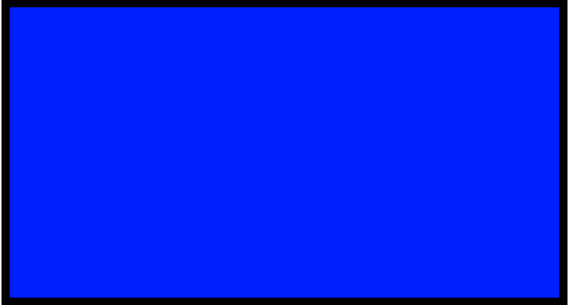
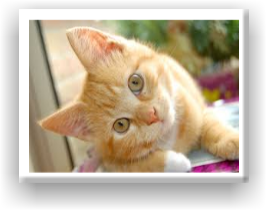

Introduction
Do you wonder why people like cats? What they do? I'll explain everything and show why I love cats. Including why millions of people have fallen in love with these furry, adorable creatures.


A.k.a. this cat